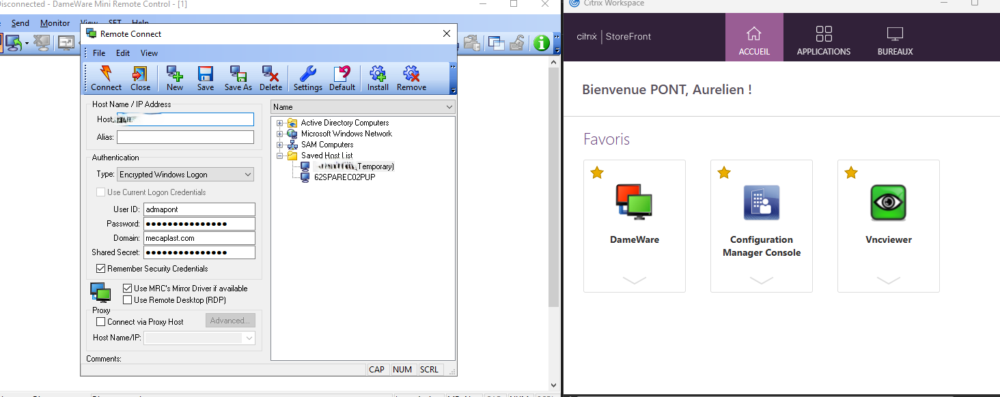

📋 Contexte professionnel
Dans le cadre de mes missions de support technique, j'interviens à distance sur les postes de travail des utilisateurs via des outils professionnels. Le parc est constitué de postes Windows 10/11 gérés via Active Directory, répartis sur plusieurs sites.
J'utilise les serveurs Citrix pour accéder à DameWare, complétés par le client RDP natif de Windows et TeamViewer pour les accès hors réseau. Les connexions sont sécurisées par authentification multi-facteurs (MFA) et toutes les sessions sont tracées pour garantir la sécurité et la conformité.
📝 Mise en situation
« Depuis la mise à jour de ce matin, je ne peux plus lancer le logiciel de facturation. J'ai un message d'erreur "Accès refusé". Besoin d'aide rapidement svp. »
🔽 Déroulé de l'intervention
J'appelle l'utilisatrice via Teams pour la rassurer et lui expliquer comment je vais procéder. Je lui indique que je vais prendre la main à distance avec DameWare et qu'elle pourra suivre mes actions directement sur son écran.
Je me connecte au portail Citrix, je lance DameWare et je prends la main sur le poste de Sophie. Comme nous sommes toujours en communication Teams, je commente chacune de mes actions.
Via DameWare, je vérifie les permissions du dossier de l'application. L'utilisatrice voit en direct ce que je fais sur son écran. Je constate que le groupe "Utilisateurs" a perdu les droits d'exécution après la mise à jour. Je rétablis les permissions via les propriétés du dossier.
Je demande à Sophie de tester le logiciel : il s'ouvre normalement. Je la remercie via Teams, je ferme la session DameWare et je clôture le ticket avec le compte-rendu de l'intervention.
🛠️ Outils d'assistance à distance
Pour réaliser mes interventions à distance, j'utilise trois outils professionnels complémentaires adaptés à différents contextes :
Remote Desktop Protocol (RDP)
- 🖥️ RDP (Microsoft) – protocole natif Windows
- 🔌Communication via le Port 3389
- 🛠️ Accès depuis le poste technicien
- 📦 Utilisé après déploiement SCCM
- 🔒 Session verrouillant l’écran utilisateur
DameWare Remote Support
- 🛰️ Solution professionnelle de contrôle à distance (SolarWinds)
- 🔌 Communication via le port 6129
- 🖥️ Accès complet à l’interface utilisateur
- 🛠️ Outils système accessibles :
- - Invite de commandes
- - Gestionnaire des tâches
- - Registre Windows
- ☁️ Application publiée sur les serveurs Citrix
- 🌐 Accessible depuis le portail web
TeamViewer
🛠️ Support à distance – Synthèse
- ☁️ Solution cloud indépendante pour interventions rapides
- 🌐 Accès Internet sans configuration réseau complexe
- 🔌Communication via les Ports:
- -✅ 5938 TCP / UDP (principal)
- -🔄 443 TCP (alternative)
- -⚠️ 80 TCP (non sécurisé)
- 🔐 Accès administrateur ou via ID temporaire + mot de passe utilisateur
📸 Interface Citrix avec DameWare

Cette capture montre l'interface que j'utilise pour me connecter aux postes des utilisateurs via l'infrastructure Citrix.
Fonctionnalités techniques utilisées :
- Prise de contrôle à distance selon le contexte : RDP pour les finalisations post-SCCM, DameWare pour l'accès aux outils système, TeamViewer pour le télétravail
- Communication avec l'utilisateur via Teams en parallèle de la prise en main (DameWare)
- Transfert de fichiers entre mon poste et le poste utilisateur (RDP, DameWare)
- Messagerie instantanée intégrée pour communiquer avec l'utilisateur pendant l'intervention (DameWare, TeamViewer)
- Accès aux outils Windows : Observateur d'événements, Gestionnaire des tâches, Services (RDP, DameWare)
- Consultation des partages réseau et configuration des imprimantes (RDP)
- Enregistrement des sessions d'assistance pour la documentation et le suivi (RDP, DameWare)
- Connexion simplifiée via ID TeamViewer pour les utilisateurs en télétravail
🖧 Infrastructure Simplifiée
Je travaille avec une infrastructure centralisée et sécurisée qui me permet d'intervenir efficacement sur les postes des utilisateurs, où qu'ils se trouvent :
Citrix & DameWare
Solution centralisée d'accès à distance pour une assistance technique professionnelle.
Fonctionnalités clés :
- Accès via portail web sécurisé
- Applications hébergées sur serveurs dédiés
- Interface complète avec outils système
- Gestion centralisée des accès
RDP (Bureau à distance)
Protocole natif Windows pour les interventions techniques avancées.
Fonctionnalités clés :
- Accès direct aux postes Windows
- Idéal pour finalisations post-déploiement
- Verrouillage de session utilisateur
- Accès complet à l'administration
TeamViewer
Solution cloud pour les interventions rapides et le télétravail.
Fonctionnalités clés :
- Accès via Internet sans configuration complexe
- Idéal pour utilisateurs hors réseau
- Connexion simplifiée par ID
- Support multiplateforme
🔐 Sécurité des accès
Tous les accès à distance sont sécurisés par :
- Authentification multi-facteurs (MFA) - Double vérification d'identité
- Chiffrement des communications - Protection des données échangées
- Contrôle d'accès strict - Permissions basées sur les rôles
- Traçabilité complète - Journalisation de toutes les sessions
📊 Cas d'usage typiques
Interventions techniques courantes :
- Finalisation post-déploiement SCCM : vérification et ajustement de la configuration via RDP
- Résolution d'incidents utilisateur via DameWare avec accompagnement en direct sur Teams
- Diagnostic réseau : utilisation de commandes ipconfig, ping, tracert pour identifier les problèmes de connexion
- Gestion des services Windows : démarrage/arrêt de services via la console services.msc
- Installation de logiciels : déploiement silencieux d'applications avec les paramètres appropriés
- Analyse des journaux d'événements Windows pour identifier les erreurs système ou applicatives
- Modification de paramètres système via le registre Windows (avec précaution)
- Vérification de la connectivité réseau et des configurations IP
- Application de stratégies de groupe (GPO) : utilisation de gpupdate pour forcer la mise à jour
💡 Bénéfices de cette solution
Efficacité opérationnelle : L'assistance à distance réduit considérablement les temps d'intervention. Plus besoin de se déplacer physiquement, ce qui permet de traiter plus de demandes et de résoudre les incidents plus rapidement.
Disponibilité : Les outils sont accessibles depuis n'importe où via le portail Citrix ou le client RDP natif, ce qui facilite le télétravail et les interventions en dehors des horaires de bureau si nécessaire.
Standardisation : Tous les techniciens utilisent les mêmes outils et versions, ce qui simplifie la formation, le partage de connaissances et assure une qualité de service homogène.
Supervision : Les responsables peuvent suivre l'activité des techniciens, identifier les postes problématiques récurrents et améliorer continuellement les processus de support.